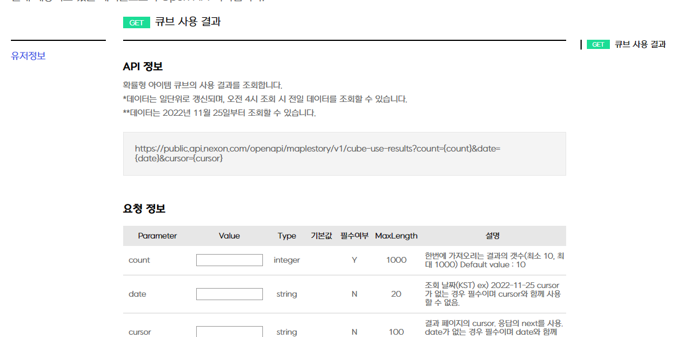
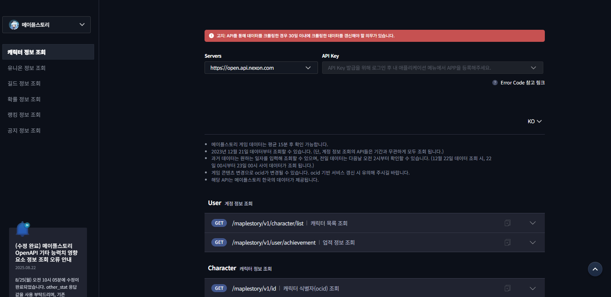

Project 03 · End-to-End · B2D Platform
넥슨 OpenAPI 개발자 센터 리뉴얼
개요
게임 데이터를 직접 활용할 수 있도록 Open API를 제공하는 사이트를 구축해, 유저가 직접 부가 가치를 창출하도록 하여 흥미와 관심도를 제고하고, 게임 데이터를 3rd-party 개발자에게 오픈해 당사 게임 데이터에 대한 신뢰도를 향상시키고자 한 프로젝트입니다.
문제
- 사용자 진입 장벽 — 기존 개발자 센터는 복잡한 API 호출 프로세스와 불친절한 문서로 외부 개발자 접근성이 낮음
- 운영 효율성 저하 — 다수 게임의 API 명세가 산재해 있고, 부정 사용 탐지 · 권한 관리를 위한 통합 어드민 기능 미비
가설
개발자 페르소나 기반 IA 재설계 + 8종 게임 API 표준화 + 통합 어드민을 동시에 가져가면, 외부 도입 속도와 내부 운영 효율을 한 번에 끌어올릴 수 있을 것이다.
기여
- 전시 구조 설계 — 사용자 페르소나(개발자) 분석 기반 IA · Sitemap, User Flow에 최적화된 GNB 카테고라이징, 메타태그 최적화
- 콘텐츠 표준화 — 복잡한 기술 문서를 직관적 가이드라인으로 재구성. 8종 게임별 API 스키마 및 Swagger 문서 표준화 작업 주도
- 운영 정책 — OAuth 2.0 적용 전략, API 권한 관리 정책(발급/삭제/쿼터 제한) 수립
- 통합 어드민 — 일자별 API Key 발급 및 호출 통계 대시보드, 이상 사용 탐지 기능 백오피스 설계
- Full-Cycle 리딩 — 베트남 지사 개발팀과 MS Teams 실시간 협업, 기획-디자인-개발-보안검수-QA 전 과정 PM 리딩, 매주 TF 회의로 일정 / 리스크 관리
- 데이터 정합성 QA — 라이브 본부 및 게임 사업팀과 협업하여 API 데이터 정합성 검증 전략 수립 / 실행
Impact
- 런칭 30일 만에 오픈 전 동기간 대비 UV 1,982% / PV 636% 신장 — 폭발적 초기 유입 달성
- API 호출 통계 리더보드 / 대시보드 구축으로 이상 탐지 운영 효율 극대화 및 파트너십 도입 기반 마련
Reflection
외부 개발자(B2D) 페르소나 기반 정보 설계는 일반 B2C와 정보 위계 자체가 다르다는 점을 체득. 표준화된 명세가 곧 사업 확장성임을 확인.
관련 화면
AS-IS · 기존

게임별로 산재된 정적 API Docs — 외부 개발자에게 불친절한 진입 경로
TO-BE · 리뉴얼

다크 테마 통합 포털 — 8종 게임 API 표준화 · 좌측 네비게이션 · 인터랙티브 테스트 UI